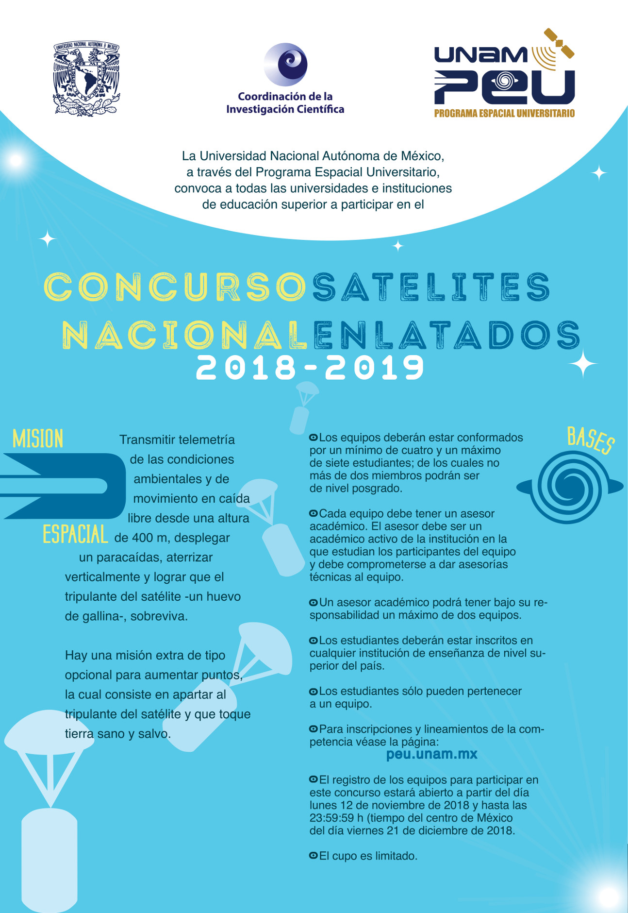

Concurso Nacional de Satélites Enlatados 2018 - 2019
La Universidad Nacional Autónoma de México y el Programa Espacial Universitario convocan, a todas las universidades e instituciones de educación superior, a participar en el Concurso Nacional de Satélites Enlatados 2018 -2019 con las siguientes bases:
Misión Espacial: Transmitir telemetría de las condiciones ambientales y de movimiento en caída libre desde una altura de 400 m, desplegar un paracaídas, aterrizar verticalmente y lograr que el tripulante del satélite (un huevo de gallina), sobreviva. Hay una misión extra de tipo opcional para aumentar puntos, la cual consiste en apartar al tripulante del satélite y que toque tierra sano y salvo.
Bases:
- Los equipos deberán estar conformados por un mínimo de cuatro y un máximo de siete estudiantes; de los cuales no más de dos miembros podrán ser de nivel posgrado.
- Cada equipo debe tener un asesor académico. El asesor debe ser un académico activo de la institución en la que estudian los participantes del equipo y debe comprometerse a dar asesorías técnicas al equipo.
- Un asesor académico podrá tener bajo su responsabilidad un máximo de dos equipos.
- Los estudiantes deberán estar inscritos en cualquier institución de enseñanza de nivel superior del país.
- Los estudiantes sólo pueden pertenecer a un equipo
- Para inscripciones y lineamientos de la competencia véase el apartado "Documentación CANSAT 2018-2019".
- El registro de los equipos para participar en este concurso estará abierto a partir del día lunes 5 de noviembre de 2018 y hasta las 23:59:59 h (tiempo del centro de México) del día viernes 21 de diciembre de 2018.
- El cupo es limitado.
Documentación CANSAT 2018-2019
- GUÍA DE MISIÓN.
- ETAPA-02: Revisión de Diseño Conceptual.
- ETAPA-03: Revisión de Diseño Preliminar.
- ETAPA-06: Bienvenida a la UNAM.
- Resultados del Concurso Nacional de Satélites Enlatados 2018-2019.
